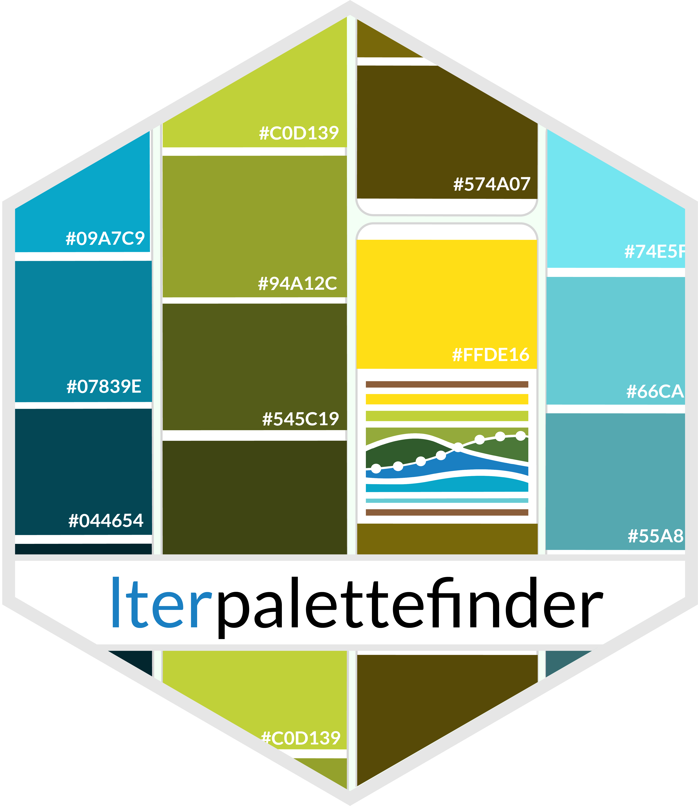
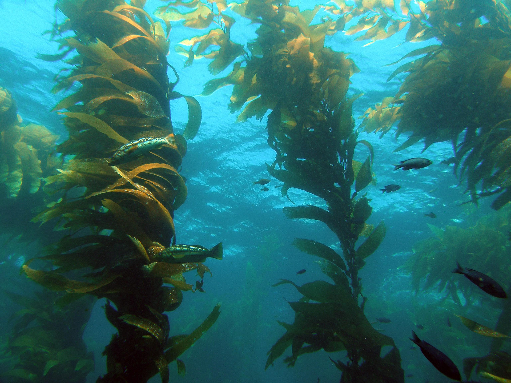
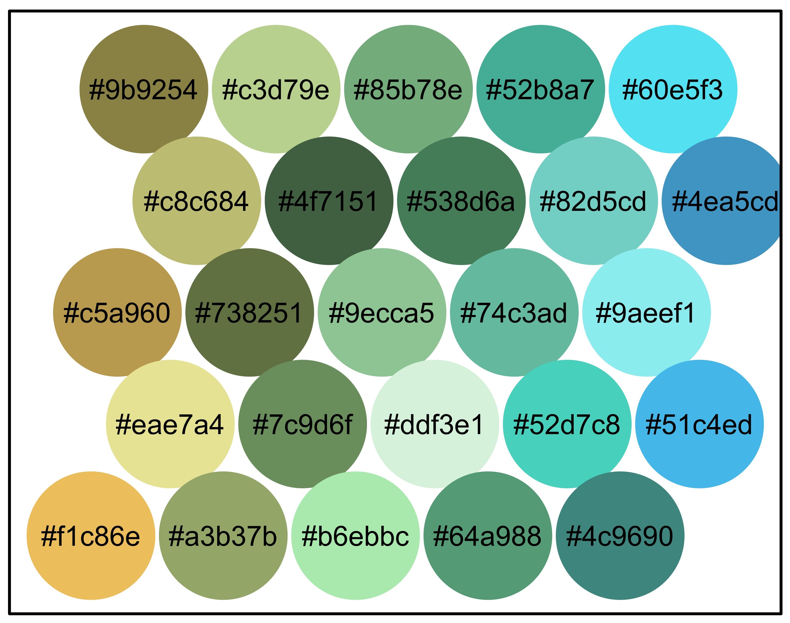
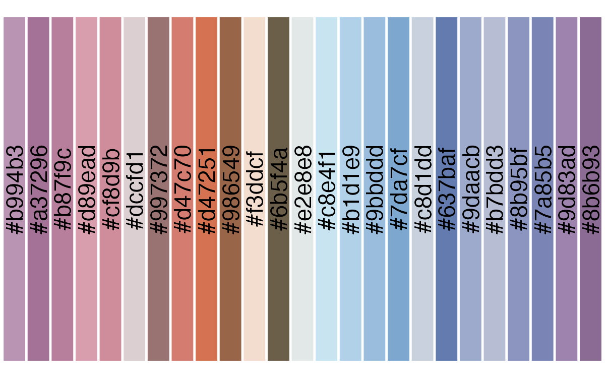
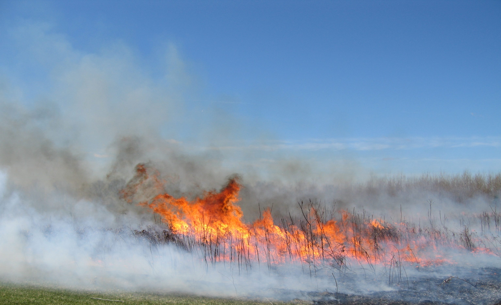
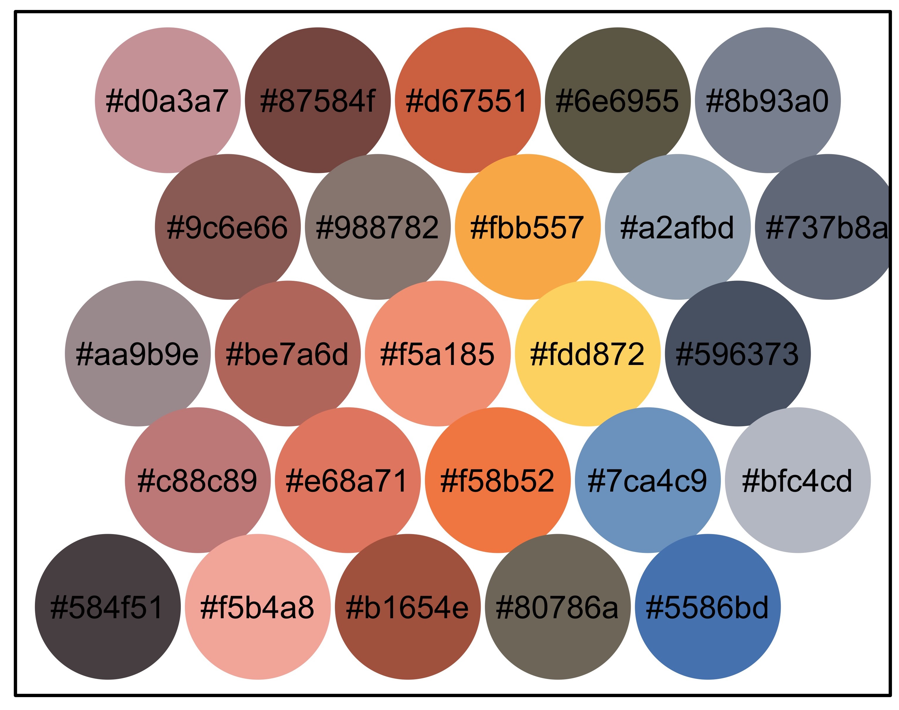

The goal of lterpalettefinder is to provide high quality color palettes derived from photos at Long Term Ecological Research (LTER) sites. This allows users to create beautiful graphics that have close visual ties to photos from the places where data were collected. This package also allows users to generate their own palettes from any photo (PNG, JPEG, TIFF, or HEIC) if the current palettes in the function do not meet their needs. For more information on the LTER Network, check out our website!
Installation
You can install the development version of lterpalettefinder from GitHub with:
# install.packages("pak")
pak::pak("lter/lterpalettefinder")R Shiny App
To help demonstrate some of the functionalities of lterpalettefinder we have created a standalone R Shiny app that allows for extracting a palette and demonstrating it entirely through a browser. While we developed this app primarily to support non-R users interested in lterpalettefinder we hope it is interesting and valuable to R experts as well! The GitHub repo for the Shiny app can be found here.
Palette Examples
These palette examples were generated from photos at LTER sites.
Santa Barbara Coastal LTER + palette_demo
| Image | Palette |
|---|---|
 |
 |
Arctic LTER + palette_ggdemo
| Image | Palette |
|---|---|
 |
Kellogg Biological Station LTER + palette_demo
| Image | Palette |
|---|---|
 |
 |